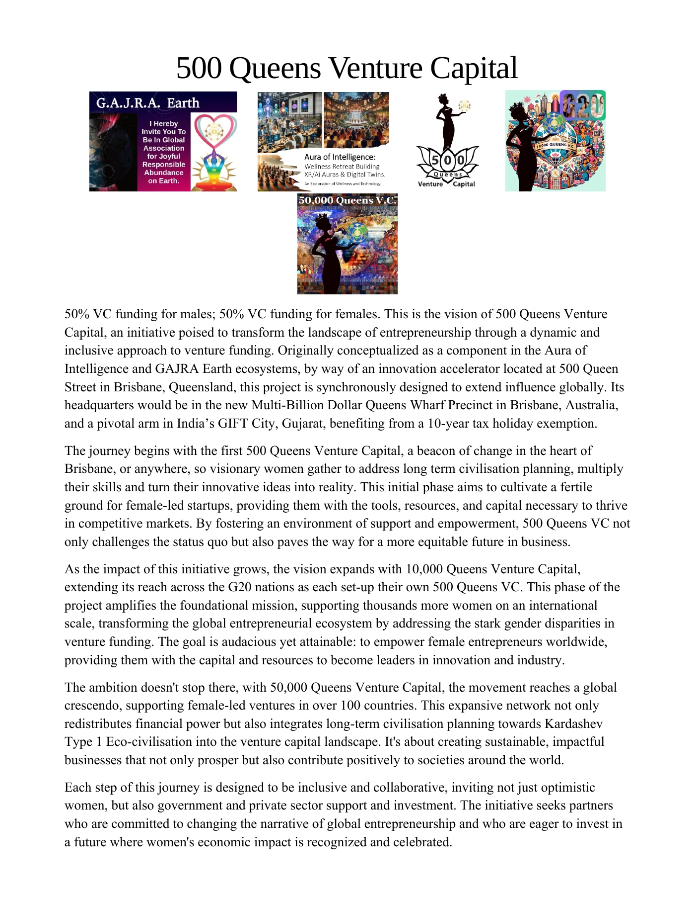

500 Queens / 1-page 500 Queens Venture Capital
1-page 500 Queens Venture Capital
Read the complete supplied reference online, or download the original file.
Original source material, including its historical dates and proposals.
Page 1 of 2
{kind=link}

Read selectable text for page 1
Text extracted from this page. Use the page image for its original layout, tables and figures.
500 Queens V enture Capital
50% VC funding for males; 50% VC funding for females. This is the vision of 500 Queens Venture
Capital, an initiative poised to transform the landscape of entrepreneurship through a dynamic and
inclusive approach to venture funding. Originally conceptualized as a component in the Aura of
Intelligence and GAJRA Earth ecosystems, by way of an innovation accelerator located at 500 Queen
Street in Brisbane, Queensland, this project is synchronously designed to extend influence globally. Its
headquarters would be in the new Multi-Billion Dollar Queens Wharf Precinct in Brisbane, Australia,
and a pivotal arm in India’s GIFT City, Gujarat, benefiting from a 10-year tax holiday exemption.
The journey begins with the first 500 Queens Venture Capital, a beacon of change in the heart of
Brisbane, or anywhere, so visionary women gather to address long term civilisation planning, multiply
their skills and turn their innovative ideas into reality. This initial phase aims to cultivate a fertile
ground for female-led startups, providing them with the tools, resources, and capital necessary to thrive
in competitive markets. By fostering an environment of support and empowerment, 500 Queens VC not
only challenges the status quo but also paves the way for a more equitable future in business.
As the impact of this initiative grows, the vision expands with 10,000 Queens Venture Capital,
extending its reach across the G20 nations as each set-up their own 500 Queens VC. This phase of the
project amplifies the foundational mission, supporting thousands more women on an international
scale, transforming the global entrepreneurial ecosystem by addressing the stark gender disparities in
venture funding. The goal is audacious yet attainable: to empower female entrepreneurs worldwide,
providing them with the capital and resources to become leaders in innovation and industry.
The ambition doesn't stop there, with 50,000 Queens Venture Capital, the movement reaches a global
crescendo, supporting female-led ventures in over 100 countries. This expansive network not only
redistributes financial power but also integrates long-term civilisation planning towards Kardashev
Type 1 Eco-civilisation into the venture capital landscape. It's about creating sustainable, impactful
businesses that not only prosper but also contribute positively to societies around the world.
Each step of this journey is designed to be inclusive and collaborative, inviting not just optimistic
women, but also government and private sector support and investment. The initiative seeks partners
who are committed to changing the narrative of global entrepreneurship and who are eager to invest in
a future where women's economic impact is recognized and celebrated.
50% VC funding for males; 50% VC funding for females. This is the vision of 500 Queens Venture
Capital, an initiative poised to transform the landscape of entrepreneurship through a dynamic and
inclusive approach to venture funding. Originally conceptualized as a component in the Aura of
Intelligence and GAJRA Earth ecosystems, by way of an innovation accelerator located at 500 Queen
Street in Brisbane, Queensland, this project is synchronously designed to extend influence globally. Its
headquarters would be in the new Multi-Billion Dollar Queens Wharf Precinct in Brisbane, Australia,
and a pivotal arm in India’s GIFT City, Gujarat, benefiting from a 10-year tax holiday exemption.
The journey begins with the first 500 Queens Venture Capital, a beacon of change in the heart of
Brisbane, or anywhere, so visionary women gather to address long term civilisation planning, multiply
their skills and turn their innovative ideas into reality. This initial phase aims to cultivate a fertile
ground for female-led startups, providing them with the tools, resources, and capital necessary to thrive
in competitive markets. By fostering an environment of support and empowerment, 500 Queens VC not
only challenges the status quo but also paves the way for a more equitable future in business.
As the impact of this initiative grows, the vision expands with 10,000 Queens Venture Capital,
extending its reach across the G20 nations as each set-up their own 500 Queens VC. This phase of the
project amplifies the foundational mission, supporting thousands more women on an international
scale, transforming the global entrepreneurial ecosystem by addressing the stark gender disparities in
venture funding. The goal is audacious yet attainable: to empower female entrepreneurs worldwide,
providing them with the capital and resources to become leaders in innovation and industry.
The ambition doesn't stop there, with 50,000 Queens Venture Capital, the movement reaches a global
crescendo, supporting female-led ventures in over 100 countries. This expansive network not only
redistributes financial power but also integrates long-term civilisation planning towards Kardashev
Type 1 Eco-civilisation into the venture capital landscape. It's about creating sustainable, impactful
businesses that not only prosper but also contribute positively to societies around the world.
Each step of this journey is designed to be inclusive and collaborative, inviting not just optimistic
women, but also government and private sector support and investment. The initiative seeks partners
who are committed to changing the narrative of global entrepreneurship and who are eager to invest in
a future where women's economic impact is recognized and celebrated.
Page 2 of 2
{kind=link}
Read selectable text for page 2
Text extracted from this page. Use the page image for its original layout, tables and figures.
This ambitious endeavor, 500 Queens VC would be more than a fund; it’s a movement, an invitation to
every woman who has a dream to change the world, to every government and private sector leader who
wants to be part of a transformative global shift, and to everyone who believes that balancing the scales
of venture capital and employee income is not only necessary but essential for our collective future.
Join us as we embark on this monumental journey.
every woman who has a dream to change the world, to every government and private sector leader who
wants to be part of a transformative global shift, and to everyone who believes that balancing the scales
of venture capital and employee income is not only necessary but essential for our collective future.
Join us as we embark on this monumental journey.